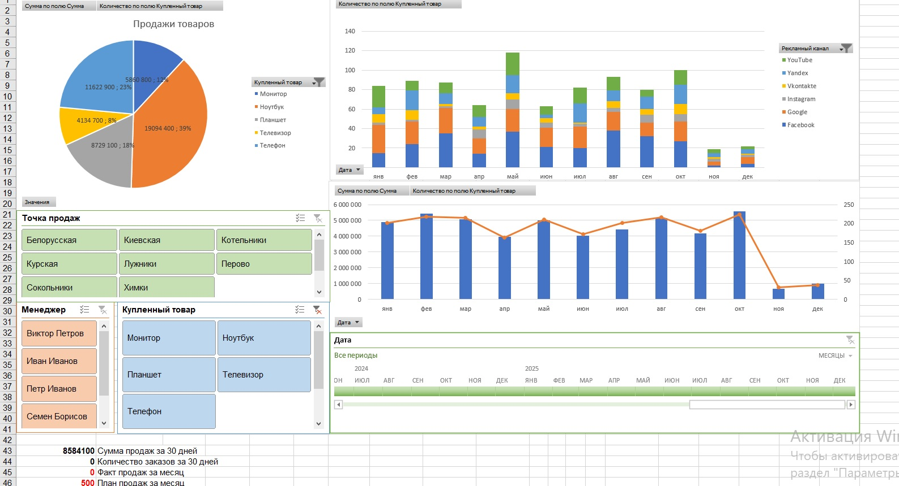

Аналитический дашборд в Excel
Самостоятельная разработка инструмента для анализа исторических данных: от структуры таблиц и расчётных формул до сводных отчётов, диаграмм и интерактивных фильтров.
Настоящий дашборд в Excel
Скриншот исходной работы. Оформление, диаграммы, показатели и срезы не перерисованы. Для подробного просмотра можно увеличить изображение средствами браузера.

Задача и моя роль
Задача
Собрать ключевые показатели в удобной форме для анализа данных и их динамики.
Моя роль
Самостоятельное проектирование структуры, расчётов, сводных таблиц, фильтров и визуального представления.
Результат
Excel-дашборд на исторических данных с расчётными показателями, диаграммами и средствами интерактивной фильтрации.
Как устроена механика
Таблица исходных данных
Формулы и сводные таблицы
Срезы и фильтры
Показатели и диаграммы
Схема объясняет принципы работы исходной книги, а не имитирует её интерфейс.
Примеры расчётной логики
Две разные задачи из исходной книги: суммирование по условию и поиск соответствия в справочнике.
=SUMIF(Таблица1[Дата],">"&TODAY()-1460,Таблица1[Сумма])Суммирует значения столбца «Сумма» для записей, дата которых позднее порога в 1460 дней до текущей даты. Это агрегирование по условию, а не подсчёт строк.
=VLOOKUP(H2,$K$2:$L$13,2,0)Ищет значение из H2 в первом столбце справочника K2:L13 и возвращает соответствующее значение второго столбца. Последний аргумент 0 задаёт точное совпадение.
Обе формулы приведены из Excel-книги. Исходные данные учебные; полный файл доступен для личной демонстрации по запросу.
Демонстрация по запросу
Исходный Excel-файл не опубликован. Демонстрация интерфейса и работы срезов проводится непосредственно в Microsoft Excel.